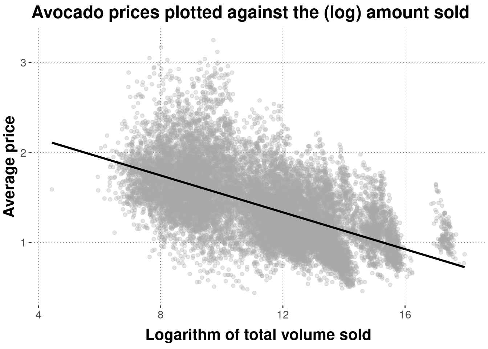

\(r_{\vec{x}\vec{y}}=\frac{1}{\sqrt{25}\sqrt{36}}=\frac{1}{30}\)
6.3 Covariance and correlation
6.3.1 Covariance
Let \(\vec{x}\) and \(\vec{y}\) be two vectors of numeric data of the same length, such that all pairs of \(x_i\) and \(y_i\) are associated observations. For example, the vectors avocado_data$total_volume_sold and avocado_data$average_price would be such vectors. The covariance between \(\vec{x}\) and \(\vec{y}\) measures, intuitively put, the degree to which changes in one vector correspond with changes in the other. Formally, covariance is defined as follows (notice that we use \(n-1\) in the denominator to obtain an unbiased estimator if the means are unknown):
\[\text{Cov}(\vec{x},\vec{y}) = \frac{1}{n-1} \ \sum_{i=1}^n (x_i - \mu_{\vec{x}}) \ (y_i - \mu_{\vec{y}})\]
There is a visually intuitive geometric interpretation of covariance. To see this, let’s look at a small contrived example.
First, notice that the mean of x and y is 3:
# NB: `map_df` here iterates over the columns of the tibble in its
# first argument slot
means_contr_example <- map_df(contrived_example, mean)
means_contr_example## # A tibble: 1 x 2
## x y
## <dbl> <dbl>
## 1 3 3We can then compute the covariance as follows:
contrived_example <-
contrived_example %>%
mutate(
area_rectangle = (x-mean(x)) * (y - mean(y)),
covariance = 1/ (n()-1) * sum((x-mean(x)) * (y - mean(y)))
)
contrived_example## # A tibble: 4 x 4
## x y area_rectangle covariance
## <dbl> <dbl> <dbl> <dbl>
## 1 2 2 1 0.25
## 2 2.5 4 -0.5 0.25
## 3 3.5 2.5 -0.25 0.25
## 4 4 3.5 0.5 0.25Similar to what we did with the variance, we can give a geometrical interpretation of covariance. Figure 6.4 shows the four summands contributing to the covariance of the contrived_example. What this graph clearly shows is that summands can have different signs. If \(x_i\) and \(y_i\) are both bigger than the mean, or if both are smaller than the mean, then the corresponding summand is positive. Otherwise, the corresponding summand is negative. This means that the covariance captures the degree to which pairs of \(x_i\) and \(y_i\) tend to deviate from the mean in the same general direction. A positive covariance is indicative of a positive general association between \(\vec{x}\) and \(\vec{y}\), while a negative covariance suggests that as you increase \(x_i\), the associated \(y_i\) becomes smaller.

Figure 6.4: Geometrical interpretation of covariance. Four data points (orange dots) and their mean (white dot) are shown, together with the squares whose sides are the differences between the observed data points and the mean. The numbers in white give the area of each square, which is also indicated by the coloring of each rectangle.
We can, of course, also calculate the covariance just with the built-in base R function cov:
## [1] 0.25And, using this function, we can calculate the covariance between the logarithm total_volume_sold and average_price in the avocado data:26
## [1] -0.5388084Interestingly, the negative covariance in this example suggests that across all associated data pairs, the larger total_volume_sold, the lower average_price. It is important that this is a descriptive statistics, and that this is not to be interpreted as evidence of a causal relation between the two measures of interest. Not in this example, not in any other. The covariance describes associated data points; it alone does not provide any evidence for causal relationships.
6.3.2 Correlation
Covariance is a very useful notion to show how two variable, well, co-vary. But the problem with this notion of covariance is that it is not invariant under linear transformation. Consider the contrived_example from above once more. The original data had the following covariance:
## [1] 0.25But if we just linearly transform, say, vector y to 1000 * y + 500 (e.g., because we switch to an equivalent, but numerically different measuring scale, such as going from Celcius to Fahrenheit), we obtain:
## [1] 250This is a problem in so far as that we would like to have a measure of how much two variables co-vary that is robust against linear changes, say in measurement scale, like the difference between Celcius and Fahrenheit.
To compensate for this problem, we can look at Bravais-Pearson correlation, which is covariance standardized by standard deviations:
\[r_{\vec{x}\vec{y}} = \frac{\text{Cov}(\vec{x}, \vec{y})}{\text{SD}(\vec{x}) \ \text{SD}(\vec{y})}\]
Let’s check invariance under linear transformation, using the built-in function cor. The correlation coefficient for the original data is:
## [1] 0.3The correlation coefficient for the data with linearly transformed y is:
## [1] 0.3Indeed, the correlation coefficient is nicely bounded to lie between -1 and 1. A correlation coefficient of 0 is to be interpreted as the absence of any correlation. A correlation coefficient of 1 is a perfect positive correlation (the higher \(x_i\), the higher \(y_i\)), and -1 indicates a perfect negative correlation (the higher \(x_i\), the lower \(y_i\)). Again, pronounced positive or negative correlations are not to be confused with strong evidence for a causal relation. It is just a descriptive statistic capturing a property of associated measurements.
In the avocado data, the logarithm of total_volume_sold shows a noteworthy correlation with average_price. This is also visible in Figure 6.5.
## [1] -0.5834087

Figure 6.5: Scatter plot of avocado prices, plotted against (logarithms of) the total amount sold. The black line is a linear regression line indicating the (negative) correlation between these measures (more on this later).
Exercise 5.4: Covariance and Correlation
- Given two vectors of paired metric measurements \(\vec{x}\) and \(\vec{y}\), you are given the covariance \(Cov(\vec{x},\vec{y}) = 1\) and the variance of each vector \(Var(\vec{x}) = 25\) and \(Var(\vec{y}) = 36\). Compute Pearson’s correlation coefficient for \(\vec{x}\) and \(\vec{y}\).
- Decide for the following statements whether they are true or false:
- The covariance is bounded between -100 and 100.
- The Pearson correlation coefficient is bounded between 0 and 1.
- For any (non-trivial) vector \(\vec{x}\) of metric measurements, \(Cor(\vec{x},\vec{x}) = 1\).
Statement c. is correct.
We use the logarithm of
total_volume_soldbecause we also used the logarithm for plotting before. Using the logarithm also gives a better linear fit, but what that means we will only see much later when we talk about linear regression.↩